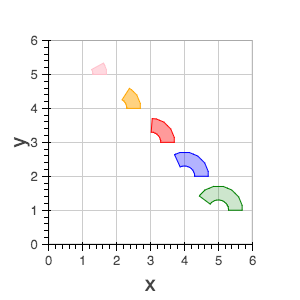
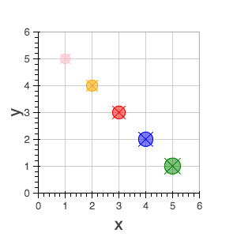
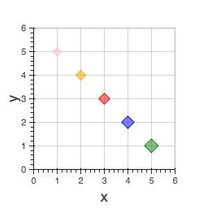
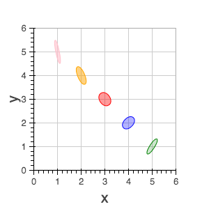
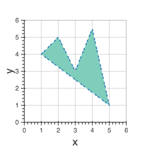
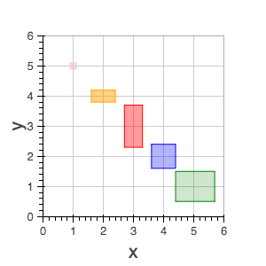
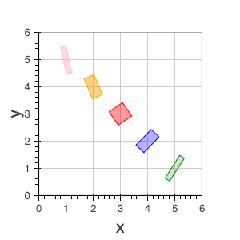
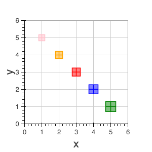
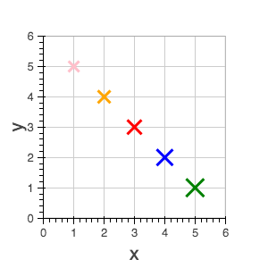

BokehJS exposes most of the standard HTML5 text properties. All of these properties
may take single values, or references to vectors of data. For instance, it is possible to
draw multiple text items at once using the text glyph. They may all be given the same
font_size or each line of text may be given its own font_size.
Note
There is currently only support for filling text. An interface to stroke the outlines of text have not yet been exposed.
- text_font - font name, e.g., 'times', 'helvetica'
- text_font_size - font size in px, em, or pt, e.g., '12pt', '1.5em'
- text_font_style
- 'normal' normal text
- 'italic' italic text
- 'bold' bold text
- text_color - color to use to render text with
- any of the 147 named CSS colors, e.g 'green', 'indigo'
- an RGB(A) hex value, e.g., '#FF0000', '#44444444'
- a 3-tuple of integers (r,g,b) between 0 and 255
- a 4-tuple of (r,g,b,a) where r,g,b are integers between 0..255 and a is between 0..1
- text_alpha- floating point between 0 (transparent) and 1 (opaque)
- text_align - horizontal anchor point for text
- text_baseline - vertical anchor point for text
- 'top'
- 'middle'
- 'bottom'
- 'alphabetic'
- 'hanging'
Bokeh plots are centered around glyphs, which generally have some combination of line, fill, or
text properties, depending on what is appropriate for a given glyph. For example, the Circle
glyph has both line and fill properties, but the Bezier glyph only has line properties.
Note
Each of the glyph images below links to a live JSFiddle.
The annular_wedge glyph displays annular wedges centered at the given coordinates with the
corresponding start_radius, end_radius, start_angle and end_angle.
Note
the direction field may be used to indicate which direction the drawing should occur between start_radius and end_radius.
- x, y - center point coordinates
- start_radius
- end_radius
- start_angle
- end_angle
- direction
- values: 'clock', 'anticlock'
- default: 'anticlock'
- Line Properties
- Fill Properties

The annulus glyph displays annular rings centered at the given coordinates with the
corresponding start_radius and end_radius.

The annulus glyph displays circular line arcs centered at the given coordinates with the
corresponding radius, start_angle and end_angle.
Note
the direction field may be used to indicate which direction the drawing should occur between start_radius and end_radius.
- x, y - center point coordinates
- radius
- start_angle
- end_angle
- direction
- values: ['clock' or 'anticlock']
- default: 'anticlock'
- Line Properties

The asterisk glyph is a marker that displays asterisks at
the given coordinates.

The bezier glyph displays Bezier curves with the given starting, ending, and control points.
- x0, y0 - starting point coordinates
- x1, y1 - ending point coordinates
- cx0, cy0 - first control point coordinates
- cx1, cy1 - second control point coordinates
- Line Properties

The circle glyph has two forms, a marker form that takes a size
field or a non-marker form that takes a radius field.

The circle_cross glyph is a marker that displays circles
together with a crossbar (+) at the given coordinates.

The circle_x glyph is a marker that displays circles
together with an X at the given coordinates.

The cross glyph is a marker that displays crossbar symbols (+)
at the given coordinates.

The diamond glyph is a marker that displays diamonds
at the given coordinates.

The diamond_cross glyph is a marker that displays diamonds
together with a crossbar (+) at the given coordinates.

The image glyph has two forms. The first form takes each image as a one-dimensional
array of scalar values together with rows and cols fields that describe the two-dimensional
shape of the array. The second form takes each image as a”array of arrays” (assumed to be
non-ragged) and the shape is inferred automatically. A palette (string name of a built-in
palette, currently) must also be supplied to use for color-mapping the scalar image.
Note
The image glyph is vectorized like other glyphs, i.e. it may be used to display several images at once.
Warning
The second (2D) form is significantly less efficient. It is currently used by the python interface to send data to the browser, but may be deprecated in the future.
- image - 1D array of data
- rows - number of rows in image
- cols - number of columns in image
- x, y - lower left
- dw - width on screen
- dh- height on screen
- palette
|
- image - 2D array of data
- x, y - lower left
- dw - width on screen
- dh- height on screen
- palette
|

The image_rgba glyph has two forms. The first form takes each image as a one-dimensional
array of RGBA values (encoded as 32-bit integers) together with rows and cols fields
that describe the two-dimensional shape of the array. The second form takes each image as a
“array of arrays” (assumed to be non-ragged) and the shape is inferred automatically.
Note
The image_rgba glyph is vectorized like other glyphs, i.e. it may be used to display several images at once.
Warning
The second (2D) form is significantly less efficient. It is currently used by the python interface to send data to the browser, but may be deprecated in the future.
- image - 1D array of RGBA
- rows - number of rows in image
- cols - number of columns in image
- x, y - lower left
- dw - width on screen
- dh- height on screen
|
- image - 2D array of RGBA
- x, y - lower left
- dw - width on screen
- dh- height on screen
|

The image_url glyph accepts the URLs of an images to display. The images are centered
on the given coordinates and rotated by the given angles.
- x, y - center point coordinates
- url
- angle
The inverted_triangle glyph is a marker that displays
upside-down triangles at the given coordinates.

The line glyphs displays a single line that connects several points given by the arrays
of coordinates x and y.

The multi_line glyphs displays several lines, each with points given by the arrays of
coordinates that are the elements of xs and ys. This glyph is especially useful for
implementing parallel coordinates plots, or plotting several aligned series simultaneously.
Note
For this glyph, the vector data is not simply an array of scalars, it is really an “array of arrays”.

The oval glyph displays ovals centered on the given coordinates with the given dimensions
and angle.

The line glyphs displays a single polygonal patch that connects several points given by the arrays
of coordinates x and y.

The patches glyphs displays several patches, each with points given by the arrays of
coordinates that are the elements of xs and ys. This glyph is especially useful for
implementing stacked area charts and cartograms.
Note
For this glyph, the vector data is not simply an array of scalars, it is really an “array of arrays”.

The quad glyph displays axis-aligned rectangles with the given dimensions.

The quadratic glyph displays quadratic curves with the given starting, ending, and control points.
- x0, y0 - starting point coordinates
- x1, y1 - ending point coordinates
- cx, cy - control point coordinates
- Line Properties

The ray glyph displays line segments starting at the given coordinate and extending the given
length at the given angle.
- x0, y0 - starting point coordinates
- length - screen units
- angle
- Line Properties

The rect glyph displays rectangles centered on the given coordinates with the given dimensions
and angle.

The segment glyph displays line segments with the given starting and ending coordinates.
- x0, y0 - starting point coordinates
- x1, y1 - ending point coordinates
- Line Properties

The square glyph is a marker that displays squares
at the given coordinates.

The square_cross glyph is a marker that displays squares
together with a crossbar (+) at the given coordinates.

The square_x glyph is a marker that displays squares
together with an X at the given coordinates.
The text glyph displays text at the given coordinates rotated by the given angle. The
location of the coordinates relative to the text is indicated by the text properties.
- x, y - text coordinates (positioning determined by text properties)
- text
- angle
- Text Properties

The triangle glyph is a marker that displays triangles
at the given coordinates.

The annular_wedge glyph displays circular wedges centered at the given coordinates with the
corresponding radius, start_angle and end_angle.
Note
the direction field may be used to indicate which direction the drawing should occur between start_radius and end_radius.
- x, y - center point coordinates
- radius
- start_angle
- end_angle
- direction
- values: ['clock' or 'anticlock']
- default: 'anticlock'
- Line Properties
- Fill Properties

The x glyph is a marker that displays X symbols at
the given coordinates.



{kind=link}
{kind=link}